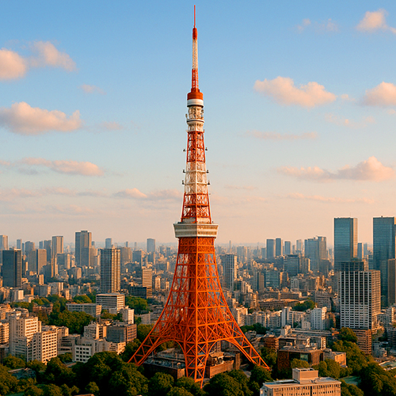

Torre de Tokio – El Icónico Símbolo Rojo y Blanco de Tokio
La Torre de Tokio (Êù±‰∫¨„Çø„É؄ɺ), finalizada en 1958, es uno de los monumentos más famosos de Jap√≥n y un s√≠mbolo del renacimiento y la modernizaci√≥n de Tokio en la posguerra. Con una altura de 333 metros, fue la estructura más alta del pa√≠s hasta la finalizaci√≥n de la Tokyo Skytree en 2012. Su inconfundible estructura de celos√≠a roja y blanca es inmediatamente reconocible y atrae a millones de visitantes cada a√±o.
Importancia histórica y diseño
Inspirada en la Torre Eiffel de París, la Torre de Tokio fue construida como torre de comunicación y transmisión para apoyar la creciente industria de la televisión y la radio en Japón. Más allá de su función práctica, se ha convertido en un icono cultural, apareciendo en innumerables películas, anime y obras de arte, simbolizando la resiliencia y el progreso tecnológico de Tokio durante la era Showa.
Miradores panorámicos y experiencia del visitante
La Torre de Tokio ofrece dos plataformas principales de observación: el Main Deck a 150 metros y el Top Deck a 250 metros. Desde estas alturas podrá disfrutar de espectaculares vistas del paisaje urbano de Tokio, incluyendo lugares famosos como Roppongi Hills, Shibuya y, en días despejados, incluso el Monte Fuji. La torre también presenta iluminaciones especiales de temporada que realzan aún más su atractivo.
Atracciones y servicios
La torre alberga varias atracciones, incluyendo un museo de cera, un acuario, tiendas de recuerdos y restaurantes que ofrecen cocina japonesa e internacional con vistas panorámicas. El complejo FootTown, situado en la base de la torre, es un animado centro de entretenimiento ideal para familias y viajeros individuales.
Cómo llegar y consejos útiles
Ubicada en el distrito de Minato, la Torre de Tokio es fácilmente accesible desde varias estaciones de tren como Akabanebashi (Línea Toei Oedo) y Kamiyacho (Línea Tokyo Metro Hibiya). Se recomienda visitarla al atardecer o por la noche para disfrutar de vistas iluminadas espectaculares. Las entradas pueden adquirirse en línea o en la entrada, y existen pases combinados para experiencias adicionales.
¿Por qué visitar la Torre de Tokio?
Tanto si le interesa la historia moderna de Japón, la arquitectura o las impresionantes vistas panorámicas, la Torre de Tokio sigue siendo un destino imprescindible. Su combinación de encanto histórico y vitalidad urbana la convierte en un símbolo atemporal del espíritu y la innovación de Tokio.
Información para visitantes
- üå∏ Direcci√≥n: 4 Chome-2-8 Shibakoen, Minato City, Tokio 105-0011, Jap√≥n
- üå∏ Horario: 9:00 ‚Äì 23:00 (√∫ltima entrada a las 22:30)
- üå∏ Entradas: Adultos ¬•1 200 (Main Deck), ¬•3 000 (Top Deck + Main Deck)
- üå∏ Acceso: Estaci√≥n Akabanebashi (L√≠nea Toei Oedo), Estaci√≥n Kamiyacho (L√≠nea Tokyo Metro Hibiya)
Etiquetas: Torre de Tokio, símbolo de Tokio, torre panorámica Tokio, atracciones Minato, vistas panorámicas Tokio, viajes a Japón, Torre de Tokio
¿Está planeando visitar la Torre de Tokio?
Para disfrutar de una experiencia verdaderamente inmersiva y enriquecedora, le recomendamos reservar un guía privado certificado de nuestro equipo. Todos nuestros guías son profesionales oficialmente autorizados por el gobierno japonés y ofrecen visitas personalizadas según sus intereses. Contacte con su guía seleccionado con antelación para verificar la disponibilidad y recibir asistencia experta para su viaje.